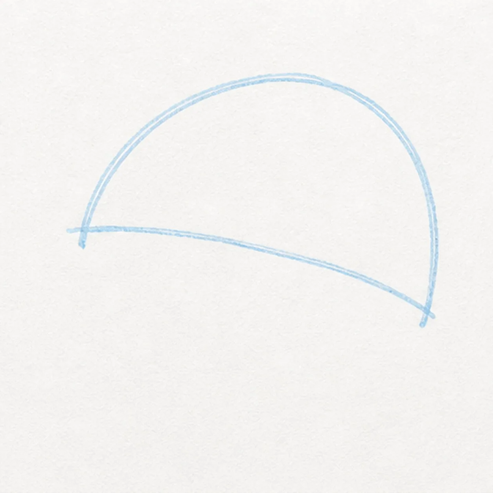
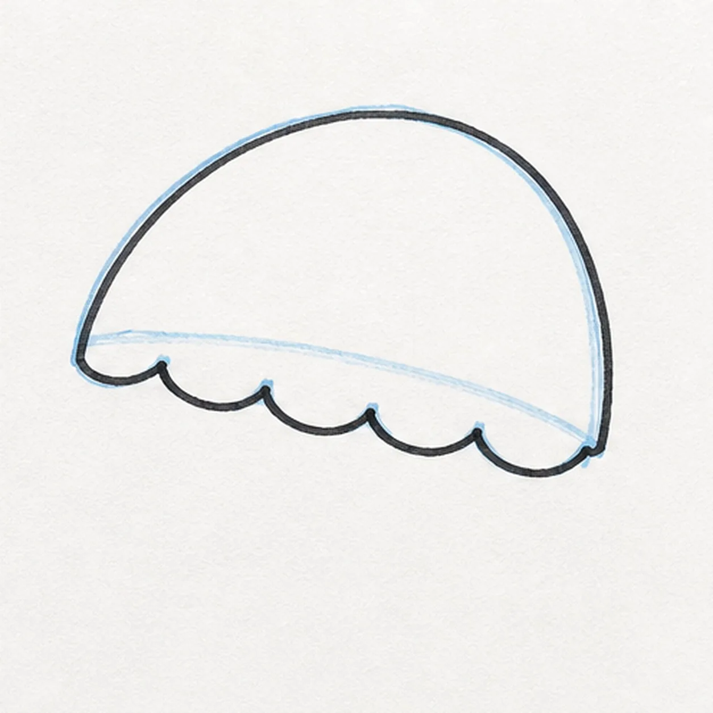
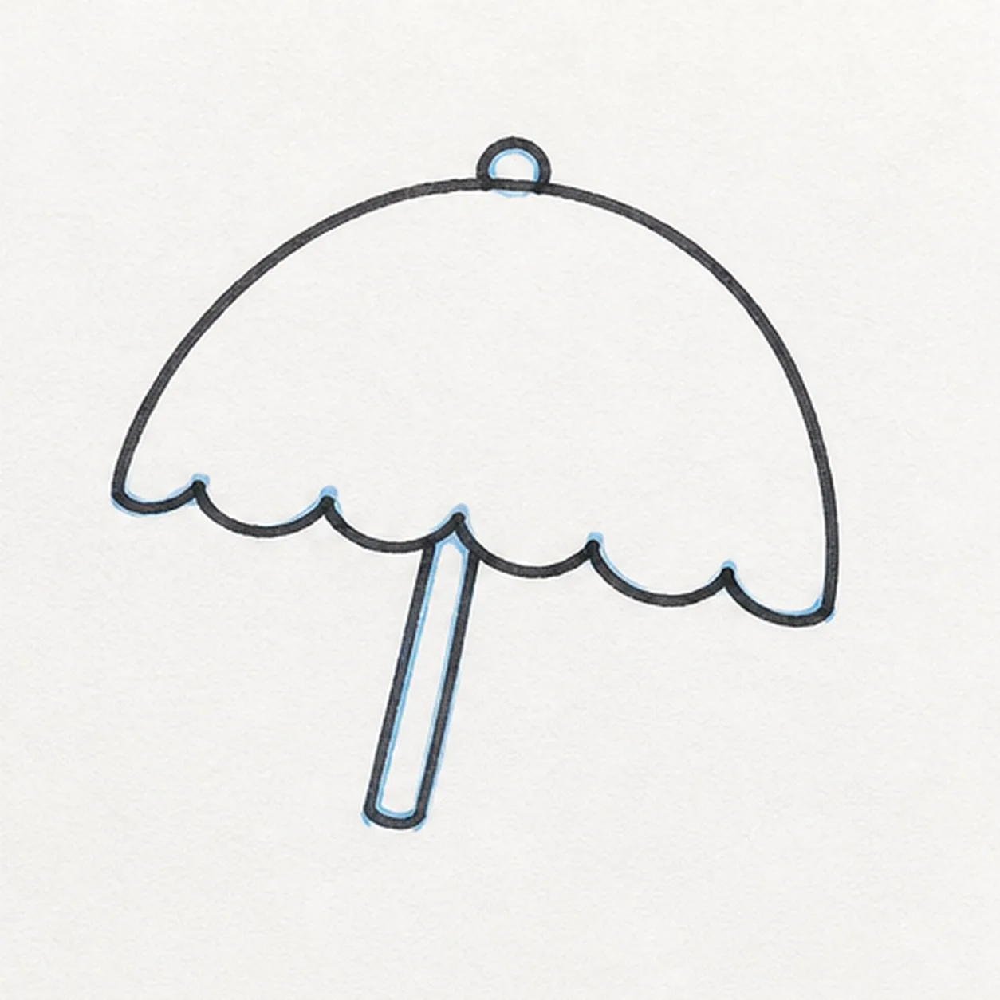
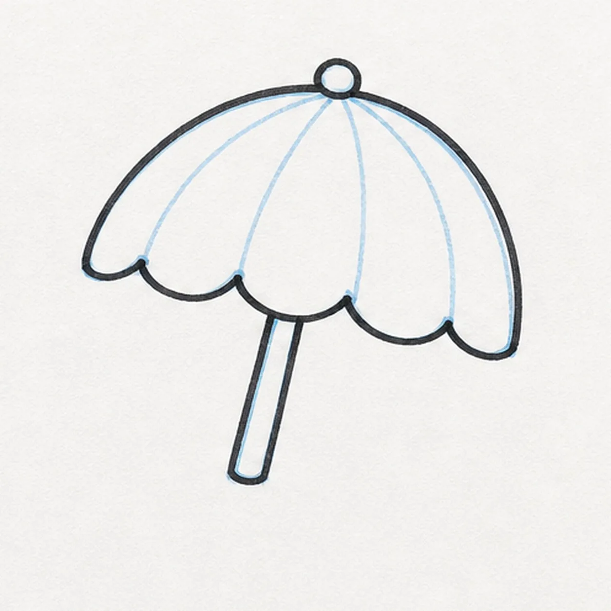
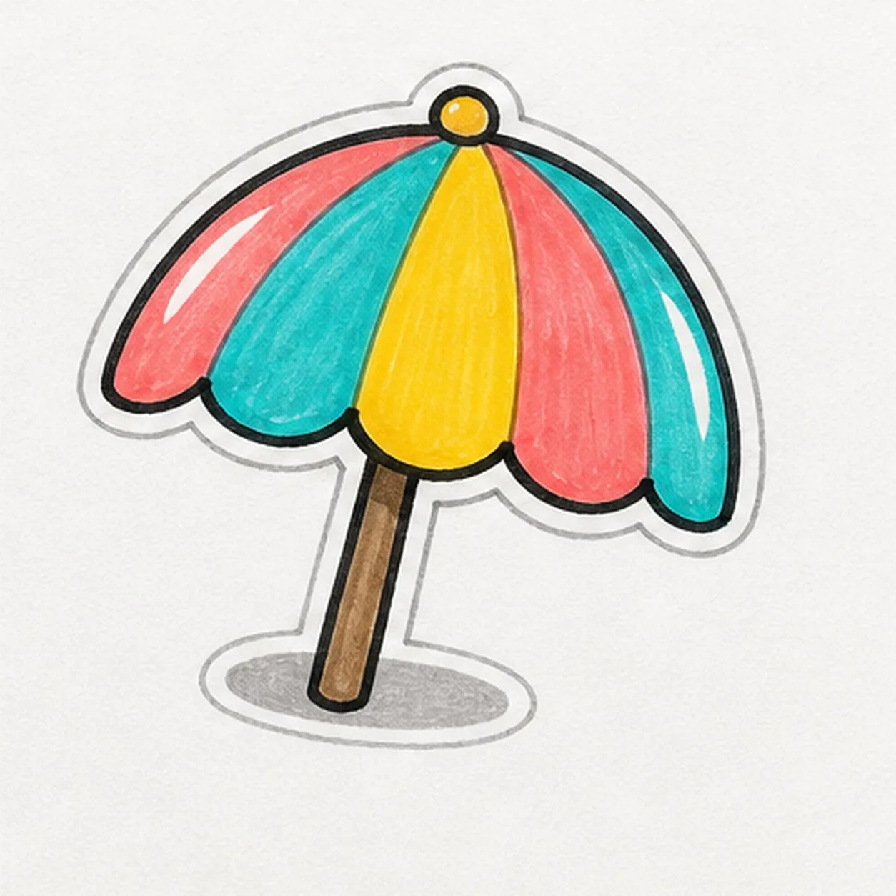

Felt-tip marker mode
Let's doodle a beach umbrella badge
Treat this as one playful practice round: sketch the idea loosely, simplify the shapes, then commit with confident marker outlines and bright fills.
-
01

Arc the canopy
Draw a broad half-circle canopy guide, tilting it slightly so it feels like a sticker badge.
Doodle tip: Make the arc wide and simple. The umbrella needs room for colored panels later.
-
02

Scallop the edge
Add soft scallops along the lower edge, then begin tracing the outside with a thick black line.
Doodle tip: Keep the scallops rounded. Sharp points can make the umbrella look like a crown.
-
03

Drop the pole
Add a small top knob and a simple pole dropping from the middle of the canopy.
Doodle tip: Place the pole under the knob. That alignment keeps the umbrella balanced.
-
04

Divide the panels
Draw curved panel seams from the top knob down to the scalloped edge.
Doodle tip: Curve the seams instead of drawing straight spokes. The canopy will feel rounder.
-
05

Fill the beach colors
Fill alternating panels with bright marker colors, leave white shine gaps, color the pole, and add a gray sticker shadow.
Doodle tip: Pick any cheerful panel order, but color inside the seams you already drew.
-
06
Snap the umbrella badge into place
Reinforce the existing outlines, deepen the marker fills, sharpen the shine gaps, and darken the shadow already on the page.
Doodle tip: Stop before adding sand, waves, or faces. The canopy shape is strong enough on its own.